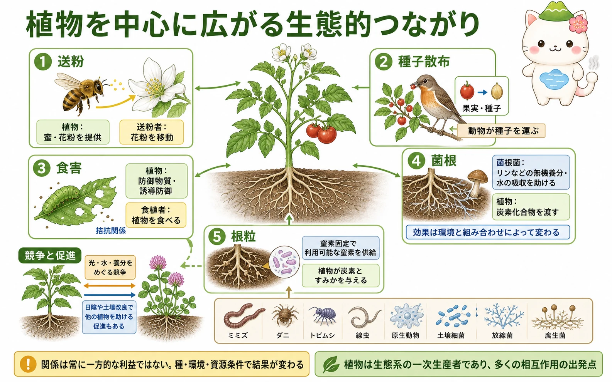
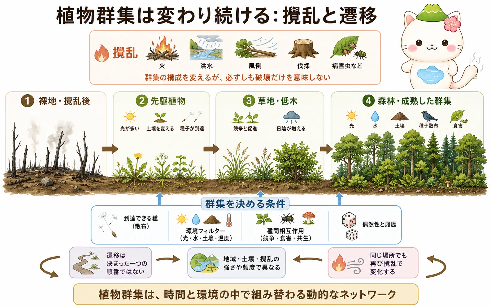

植物を中心にした相互作用
同じ場所に暮らす生物の集まりを群集といいます。植物は一次生産者として有機物をつくり、食物網の基盤になります。しかし関係は「植物が食べられる」だけではありません。花粉を運ぶ送粉者、種子を運ぶ動物、葉を食べる草食者、病原体、根に住む微生物などが、植物の繁殖・成長・分布に影響します。
送粉は代表的な相利関係です。植物は蜜や花粉などを報酬として出し、動物は花から花へ花粉を運びます。果実を食べる鳥や哺乳類が種子を運ぶ種子散布も、植物が新しい場所へ広がる助けになります。一方、花を訪れる動物が必ず受粉をするとは限らず、種子を食べることもあります。関係の名前を先に決めるより、どの生物が、何を受け取り、繁殖や生存にどんな結果が出るかを見ることが大切です。


「共生」はいつでも両者が同じだけ得をする、という意味ではないよ。水分や養分、相手の種類、ほかの生物によって、利益とコストのつり合いは変わるんだ。
土の中の協力と駆け引き
根の周りは、植物と微生物が出会う場所です。菌根では、菌類の菌糸が土の中へ広がり、植物の根と栄養のやり取りをします。菌類はリンなどの無機養分や水を得やすくし、植物は光合成でつくった炭素化合物を渡します。菌根の型や効果は植物・菌類・土壌条件で異なり、すべての植物で同じように働くわけではありません。
マメ科などの一部の植物では、根粒の中に共生細菌が入り、窒素固定によって大気中の窒素を植物が使える形へ変えます。植物側は炭素と住み場所を提供します。この関係も無償ではなく、養分が十分な土では植物にとっての利益が小さくなることがあります。地下の関係を理解する鍵は、「誰が何を渡すか」と「その交換はどの条件で得になるか」です。
植物群集はどう組み上がるか
ある場所にどの植物が生えるかは、一つの原因では決まりません。まず、その場所へ種子や胞子が届くか。次に、光・水分・温度・土壌養分・塩分などの環境を耐えられるか。さらに、近くの植物との競争、日陰をつくる効果、送粉者や土壌生物との関係が働きます。こうした到達、環境による選別、生物間相互作用、偶然や履歴を合わせて、群集の組成を考えます。
競争は、光、水、無機養分、空間など限られた資源をめぐって起こります。ただし植物どうしは常に敵ではありません。乾燥地で大きな植物の陰が地表の乾燥を和らげたり、風を弱めたりして、ほかの植物の定着を助ける促進もあります。個体にとっての関係が、群集全体の多様性や生産量にどうつながるかを確かめます。
攪乱と遷移
火災、洪水、暴風、土砂移動、食害、人の伐採などは、群集の構成や資源の条件を大きく変えます。こうした比較的はっきりした変化を攪乱といいます。攪乱のあと、時間とともに出現する種や優占する種が変わる過程が遷移です。裸地から始まる一次遷移と、土壌や種子・地下茎などが残る二次遷移では、再生の出発点が異なります。

以前は、遷移を安定した一つの「極相」へ進む流れとして説明することがありました。実際の群集は、攪乱が繰り返され、気候も変化し、種の到来にも偶然があるため、必ず一つの完成形に収束するとは限りません。攪乱を単なる破壊とみなさず、どの資源・生物・履歴を変えたのかを追うと、植物群集の変化を読み解きやすくなります。
草原に木が少ないことを「途中だから」とは決められないよ。火や放牧、土の水分、種子の届き方など、その場所で続く条件が草原という群集を支えていることもあるんだ。
この冊子の要点
- 植物は送粉・種子散布・食害・病原体・土壌生物を通して、ほかの生物の生活と結びついています。
- 菌根や根粒の関係では、植物と微生物が資源を交換しますが、利益とコストは条件によって変わります。
- 植物群集は、到達、環境による選別、競争・促進などの相互作用、履歴によって組み上がります。
- 攪乱後の遷移は一方向で固定された道筋ではなく、残った土壌や種、環境、偶然によって変化します。